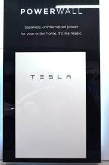

Powerwall:
 En 2015, il propose (sous la marque Tesla) un système dit « Powerwall » de stockage tampon d'énergie domestique intermittente (ex : solaire et/ou éolienne) via des batteries lithium-ion présentant une bonne efficacité énergétique et bonne durée de vie, acceptant des recharges incomplètes tout en fournissant une tension constante durant toute leur décharge23. Ces powerwalls pourront équiper des immeubles et des maisons et, selon Elon Musk, pourraient contribuer à « transformer totalement l'infrastructure énergétique mondiale pour la rendre totalement durable et sans produire d'émissions de carbone ». Chaque bloc accumulateur mesure 130 × 86 × 18 cm et peut accumuler 7 ou 10 kWh, pour une puissance continue de 2 kW (pic à 3,3 kW). Le système peut aussi accumuler de l'énergie achetée en heures creuses ou contribuer à la régulation de fréquence du réseau. Le système permettrait selon lui « de se passer du réseau électrique » y compris dans les pays pauvres, ou d'assurer la consommation électrique durant les coupures de courant. Il compare ce changement à celui du téléphone mobile qui remplace peu à peu les lignes terrestres. Les batteries seront fabriquées par Panasonic dans une « giga-usine (Gigafactory) » de 5 milliards de dollars dans le Nevada, couverte de panneaux solaires et qui sera la plus grande usine de batteries au monde, où il projette de produire un équivalent/stockage de 35 gigawatt-heures d'ici 2020. Les commentateurs posent cependant la question de la ressource en lithium (le Chili et la Chine n'en fournissent en 2015 qu'environ 11 Mt/an avec un prix qui a décuplé entre 2000 et 2010). Tesla sera en outre en concurrence avec d'autres entreprises établies dans le domaine dont LG Chem, AES Energy Storage and NEC/A123, et de nouveaux arrivants dont Enphase, Sunverge Sonnenbatterie et Stem ou Alevo (start-up suisse qui a fait irruption sur la scène en 2014 avec une batterie lithium-ion-soufre garantie 20 ans et un investissement de 1 milliard de dollars dans une usine de fabrication en construction en Caroline du Nord tablant sur un marché de 200 mégawatts-heures de stockage en 2015 et 1 gigawatt-heure en 2016)24. D'autres observateurs notent que ces batteries pourront modifier, voire affecter, le secteur de la production d'électricité de pointe et le marché des smartgrids et de la substitution de la « puissance de crête » par le stockage25.